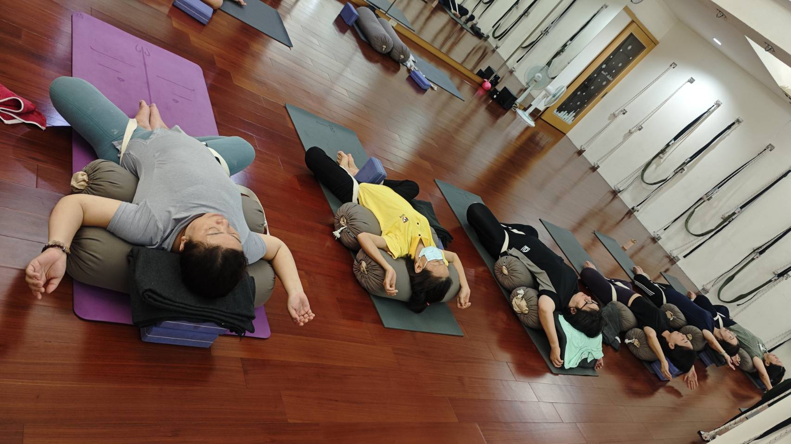

第一次做 AI 體態檢測，現場到底會發生什麼事？

- 全程約 20 分鐘，不用先有瑜伽基礎，身體很硬也可以做。
- 老師會協助現場拍攝，看肩線、頭部前傾、脊椎與骨盆角度，不是機器自動吐一個分數就結束。
- 老師會拿著畫面當面跟你解釋，一對一說明，你可以當場發問。
- 看完解讀，要不要接著上課由你決定，沒有推銷壓力。
想預約 AI 體態檢測，但心裡卡著一個問題：到底現場會發生什麼事？會不會很像去做健康檢查、要換衣服、要被儀器繞來繞去？其實流程沒有你想的複雜。這篇就把實際會經歷的每一步講清楚，讓你預約前心裡先有底。
到店之後，第一步是什麼
先透過 LINE 預約好時段，確認後再到教室——高雄市左營區新庄仔路 726 號 3 樓。不用特別空腹、不用特別打扮，穿平常活動方便的衣服就可以。到了之後不會馬上被推去拍照，老師會先簡單了解你目前的狀況，再開始進行檢測。
接待區長什麼樣子，會不會很像走進診所
很多人腦中想像的「檢測」，多少帶點診間的畫面——白牆、儀器、消毒水味。這裡的接待區其實比較像走進一間小教室：櫃檯上擺著鮮花，牆上貼著瑜伽動作的圖卡，玻璃門上還有可愛的貼紙裝飾，老師會先跟你聊幾句、拿平板跟你確認今天要做的項目，不是一坐下就被安排上檢測台。整個氣氛比較接近「跟教你的老師聊聊天」，不是「等叫號看診」。
現場怎麼看？看的是這幾個地方
老師會協助你現場拍攝，透過 AI 姿勢分析，觀察幾個關鍵位置：
- 肩線與左右高低：肩膀是不是有明顯高低差，或整體往前縮。
- 頭部前傾與頸部位置：頭是不是習慣往前伸，跟肩頸緊繃可能有沒有關係。
- 脊椎、骨盆與身體軸線：站姿、骨盆角度、左右有沒有偏移。
拍攝會分成正面跟側面兩個角度，不是拍一張就結束。正面主要看左右——肩膀是不是一高一低、身體有沒有偏向某一邊；側面則是看前後——頭部前傾的程度、骨盆是往前還是往後傾。這兩個角度合起來看，才比較容易對出你平常感覺到的「哪裡卡、哪裡緊」實際上對應的是身體的哪個方向出了問題。這些不是抽象的「分數」，而是實際看得到的畫面——你會親眼看到自己站著的樣子，跟老師一起對照哪裡比較明顯。
這跟一般的「姿勢檢測」有什麼不一樣
你可能也做過類似的事——按摩館師傅摸一摸說你「骨盆歪」、健身房的 InBody 機器印出一張體脂報告。這些多半是憑經驗判斷，或只給數字、沒有人幫你解釋數字跟你的日常不舒服有什麼關係。AI 體態檢測不一樣的地方，是它先把「感覺歪、感覺緊」轉成看得見的角度畫面，再由老師當面把畫面翻譯成你聽得懂的話——不是丟一串數字給你自己猜，也不是單憑手感給一個模糊的結論。
老師怎麼解讀：一對一說明，不是丟一份報告給你
拍攝完，重點其實在這一步。老師會拿著畫面，當面跟你解釋這些角度代表什麼、為什麼會這樣、跟你平常的感覺（比如肩頸容易緊、站久了腰痠）對不對得起來。整個過程是一對一進行的，你可以隨時打斷、隨時問「那我這樣算嚴重嗎」，不是自己拿著一張報告回家慢慢猜。
也因為是一對一說明，不是在團課空檔插進去做，過程不會有其他學員在旁邊等、也不會覺得自己被圍觀。整個檢測跟解讀是一段獨立安排的時段，你可以放心把注意力放在自己的身體上，不用分心在意旁人的眼光。

身體很硬、完全沒基礎，會不會很尷尬
這大概是最多人擔心的事——會不會去了才發現自己的身體「太差」，反而更難堪。實際上檢測本身不需要做任何高難度動作，就是站著、讓老師觀察與拍攝而已。換個角度想，正因為你還沒開始練，才更需要先知道自己現在的狀態，僵硬、歪斜、代償，都是檢測想幫你看清楚的東西，不是門檻。
本來就知道自己哪裡特別緊，可以先跟老師說嗎
可以，而且建議這樣做。很多人以為檢測是「先讓老師看，不要先講太多，才不會影響判斷」，其實剛好相反——你越早講出「我肩頸容易緊」「我坐久了腰會痠」這些平常的感覺，老師越能把畫面上看到的角度，跟你實際的生活狀態對起來。檢測看到的是「當下站著」的畫面，你講的是「長期累積」的感覺，兩邊合起來，解讀才會更貼近你真正的狀況，而不是各講各的。
檢測完，會不會被要求馬上報名
不會。檢測結束後，你會拿到三件事：拍攝下來的姿勢角度畫面、老師當面的解讀，以及接下來可以優先留意的方向。要不要繼續安排課程，由你自己決定——老師不會在這個當下逼你做決定。如果你想先進一步了解報告上的數字實際代表什麼，可以看AI 體態檢測報告怎麼看這一篇。
還不確定自己適不適合現在做？
如果你還在猶豫「我這樣算需要做嗎」，可以先看AI體態檢測適合誰或沒有明顯疼痛也能做嗎這兩篇判斷文。如果你其實還沒決定要不要開始上課，也可以先看團課、一對一、零基礎入門班，第一次來該選哪一種，把整體方向想清楚再出發。
本文為服務流程說明與一般衛教分享，AI 體態檢測為運動功能性姿勢評估，非醫學診斷。若有疼痛或特殊病史，請先諮詢合格醫療專業人員。
常見問題
第一次做需要準備什麼嗎？
不用特別準備，事先透過 LINE 預約時段即可，建議穿平常活動方便的衣服。
檢測會很痛或不舒服嗎？
不會。檢測是現場拍攝與姿勢角度分析，沒有侵入性動作，也不會刻意用力擠壓身體。
是老師親自看，還是機器自動出結果？
由老師協助現場拍攝，並當面為你解讀畫面，不是機器自動吐出一個分數就結束。
身體很硬、完全沒基礎也可以做嗎？
可以，這正是檢測存在的目的——不是要你先有瑜伽底子，而是先看懂目前的身體狀態，僵硬完全不影響檢測本身。
會不會被要求當場報名？
不會。老師解讀完會給你方向，但要不要繼續安排課程完全看你自己怎麼想，沒有人會在現場逼你決定。